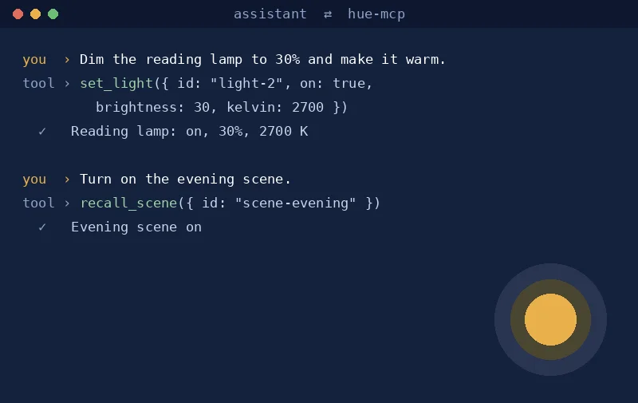

AI-first
Hue lights for AI assistants
A small Model Context Protocol server that lets an AI assistant list and change your Philips Hue lights, rooms and scenes in plain English.

What it is
A server that gives an AI assistant a few safe tools: list lights, rooms and scenes, set a light, and recall a scene.
Why I built it
To learn the Model Context Protocol on something useful at home. Keys stay on your own machine.
How it's built
Node.js, the Model Context Protocol SDK and the Philips Hue local API on your home network.
Status and limits
Needs a Hue Bridge on the same network. Tested with my own setup only.